There are 12 heros in Nuclear Throne. They all have different special abilities.
Fish
 Fish is the first character people use. His special ability is the dodge roll. He also gets more ammo dropped from dead enemies. His Throne Butt special is unlimited dodge roll.
Fish is the first character people use. His special ability is the dodge roll. He also gets more ammo dropped from dead enemies. His Throne Butt special is unlimited dodge roll.
Crystal
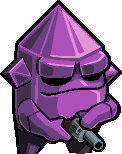Crystal is a very powerful character. She has the ability to turn into impenetrable crystal for a short period of time. If anything hits her it does no damage. She cannot shoot while in this state. Her Throne Butt is the ability to teleport away from the action while impenetrable.
topEyes
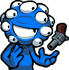Eyes is the sharpshooter of the group. Their special ability allows them to use telekenesis and drag rads and item on the floor towards them. Their Throne Butt allows them to attract items and repulse enemies.
topMelting
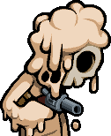Melting is a difficult character to use. They start with only two health points, this makes it so almost any enemy can kill them in one hit. Their special ability to cause the bodies of dead enemies to explode damaging any living enmies in the area. Melting's Throne Butt makes the explosion much larger.
topPlant
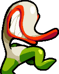Plant is an humanoid plant, that is very mobile. Plant is able to walk a bit faster than the other characters. Plant spits a seed that quickly grows and traps any enemies unfortunate enough to get caught in it. Plant's Throne Butt has the trap kill any enemies with less than 30% health.
topY.V. (Yung Venus)
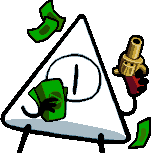Y.V. is a God of the game world. He does not die if he loses all his health, he just gets bored and goes home. Y.V. is able to fire his gun 80% faster than any of the other characters, and his special fires two rounds of the weapon at the same time.
topSteroids
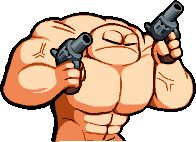Steroids is strong. He is all muscle and he proves it by being able to fire two weapons at the same time. Unfortunately he cannot aim well. His Throne Butt ability let's him earn ammo while firing both weapons at the same time.
topRobot
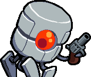Robot is well, a robot. She is able to eat guns for health and ammo rewards. Robot's Throne Butt allows her to gain more ammo for each weapon eaten.
topChicken
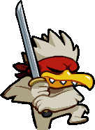Chicken is a ninja. Her starting weapon is a sword that she can throw. In the event of her death Chicken loses her head and can still run around killing enemies. After a short amount of time she will die. If you pick up some health while headless, she will not die, but she will lose two health points. Chicken's Throne Butt has her trown weapon go through enemies.
Rebel
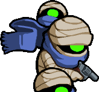Rebel is a bandit who wants to find the Nuclear Throne. His special power is to create clones of himself at the cost of health. These clones will attack any enemies that get into their line of sight. Rebel's Throne Butt increases the firing rate of his clones.
topHorror
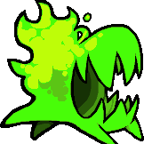Horror is a being of pure energy. Their special powers are being able to shoot a ray of radiation at enemies, at the cost of rads. This beam will destroy all projectiles that it touches. Horrow is also awarded one more choice at mutation selection time. With Throne Butt, Horror's radiation beam becomes wider.
topRogue
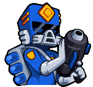Rogue is an ex-I.D.P.D. officer. She did not leave under good terms, as such I.D.P.D will follow her to every stage trying to kill her. Rather than rads Rogue will pick up Portal Strikes, these strikes are very powerful hitting a large portion of the screen at once. Her Throne Butt increases the effectiveness of the Portal Strike.
top